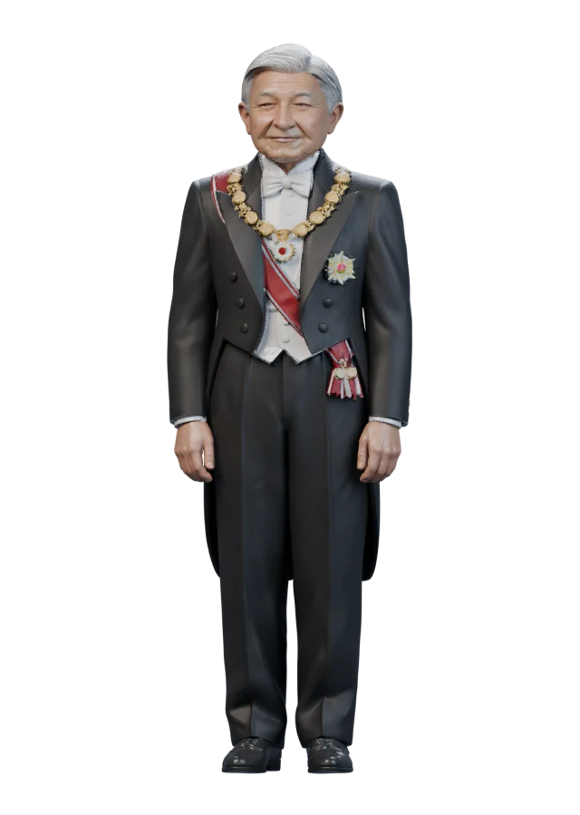

神属性
天子
金と月光の術を使い分ける、双月の天儀を司る者。遠くから暁光の矢を放ち、間合いが詰まれば星踏みと日輪連掌で攻めます。
運営長認証で使用できます。オンラインで使うときは、セーブ同期を済ませてから出撃してください。

技と入力
| 入力 | 技 | 動き |
|---|---|---|
| J／斬 | 日輪連掌 | 接近して三段の掌撃をつなぐ。 |
| K／技A | 暁光の矢 | 正面へ神光の矢を撃つ。 |
| 移動＋K／技A | 星踏み | 青白い弧を引きながら素早く踏み込む。 |
| U／技B | 神紋・星環 | 相手の足元に神紋を描き、一拍後に神光を落とす。 |
| 移動＋U／技B | 月弧の返し | 少しずつ角度の違う三つの月弧を放つ。 |
| H／癒 | 晨光の祈り | 自身と近くの仲間のHPを回復する。 |
| L／奥 | 皇天・暁界 | 広い範囲を朝焼けの神光で打つ。 |
| 覚醒中のL／奥 | 双月神楽・天照 | 一度目の神光に続けて、月の残光で追撃する。 |
ランクマッチでは対戦専用バランスを適用します。技Aは踏み込み、技Bは飛び道具になり、天子のモーションと神属性の演出で戦います。ランクマッチの使用条件とルール